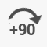
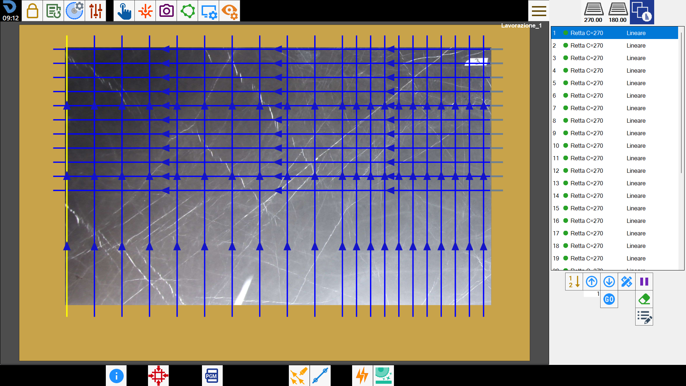

Con questa funzionalità è possibile aggiungere i tagli multipli.
Questa particolare tipologia di tagli permette di creare una serie di tagli paralleli tra loro nello stesso gruppo, con la possibilità di avere due gruppi ciascuno con la sua direzione impostabile.
L’interfaccia appare simile alla seguente:

Barra laterale
Selezione e gestione gruppi di tagli
 | Creazione primo gruppo di tagli |
| Creazione secondo gruppo di tagli |
 | Gestione dei tagli |
Parametri tagli
Per ciascuno dei due gruppi di tagli a disposizione dell’operatore è possibile inserire fino a 100 configurazioni simultanee di tagli, con i rispettivi parametri.
 | Direzioni ortogonali |
Larghezza | La distanza tra un taglio e l’altro. |
Numero | La quantità di tagli paralleli da creare. |
 | Posizione tagli |
Visualizza tagli successivi/Precedenti |
Allungamento tagli
L’operatore ha la possibilità di allungare tutti i tagli presenti nel primo e nel secondo gruppo all’inizio o alla fine della misura impostata.
 | Start |
 | End |
Cancella e aggiorna tagli
 | Cancella tagli |
Aggiorna tagli |
Asse C
È possibile ruotare la testa della macchina al fine di regolare l’orientamento dei tagli sia del primo che del secondo gruppo.
 | Ruota _90 |
 | Ruota -90 |
 | Rotazione testa macchina |
 | MDI |
Spessore
L’operatore può andare a definire lo spessore della lastra che si andrà a tagliare.
 | Spessore manuale |
 | Spessore con macchina |
Esecuzione della lavorazione
L’operatore ha la possibilità di impostare entrambi i gruppi di taglio modificandone i relativi parametri.
Una volta ottenuto il risultato desiderato potrà essere premuto il pulsante “Avvia ciclo“ per eseguire la lavorazione.
Primo gruppo tagli
Nel primo gruppo di tagli verranno definiti uno o più gruppi di tagli modificando i parametri Larghezza, Numero e Posizione Tagli, oltre alla rotazione dell’asse C.
Nella seguente lavorazione sono stati impostati dei tagli paralleli rispetto alla posizione attuale della macchina.

Secondo gruppo tagli
Similmente al primo gruppo di tagli, anche per il secondo è possibile modificare i parametri per ottenere il risultato ricercato.
In questa lavorazione la direzione dei tagli è stata modificata, eseguendo alcuni tagli ortogonali rispetto a quelli del primo gruppo.

Ottimizzazione e gestione dei tagli
In questa sezione possiamo andare a modificare l’ordine di esecuzione dei tagli con la possibilità di scegliere se eseguire o meno un taglio .
